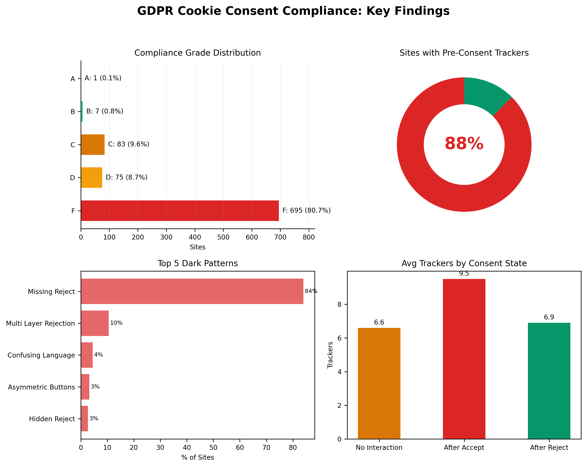
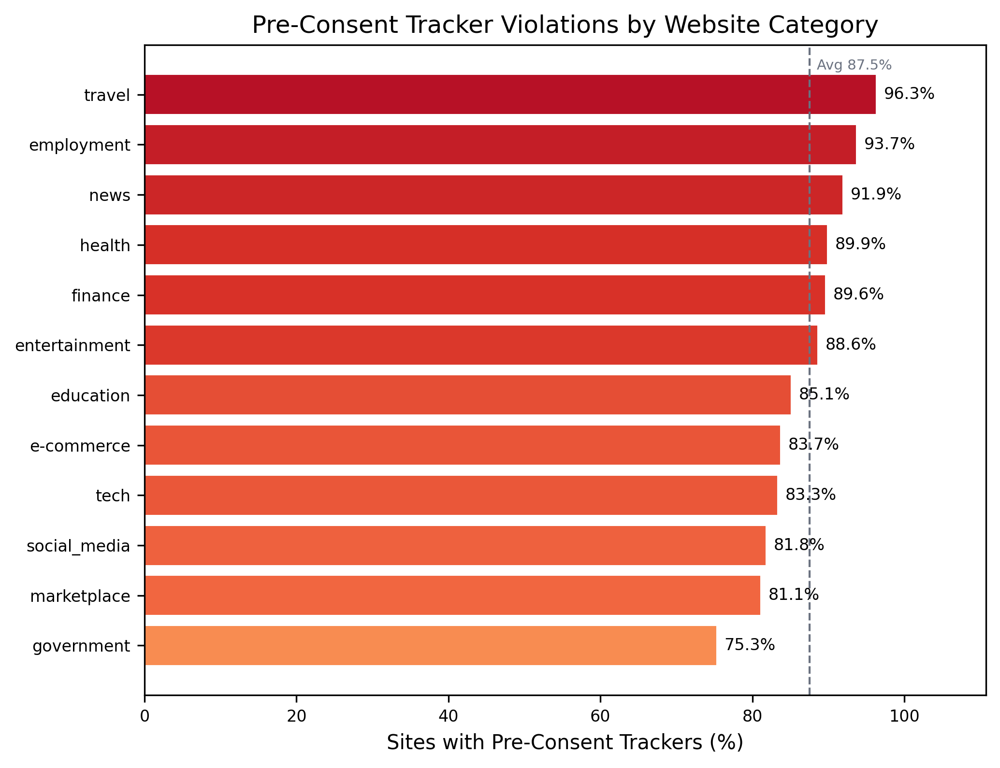
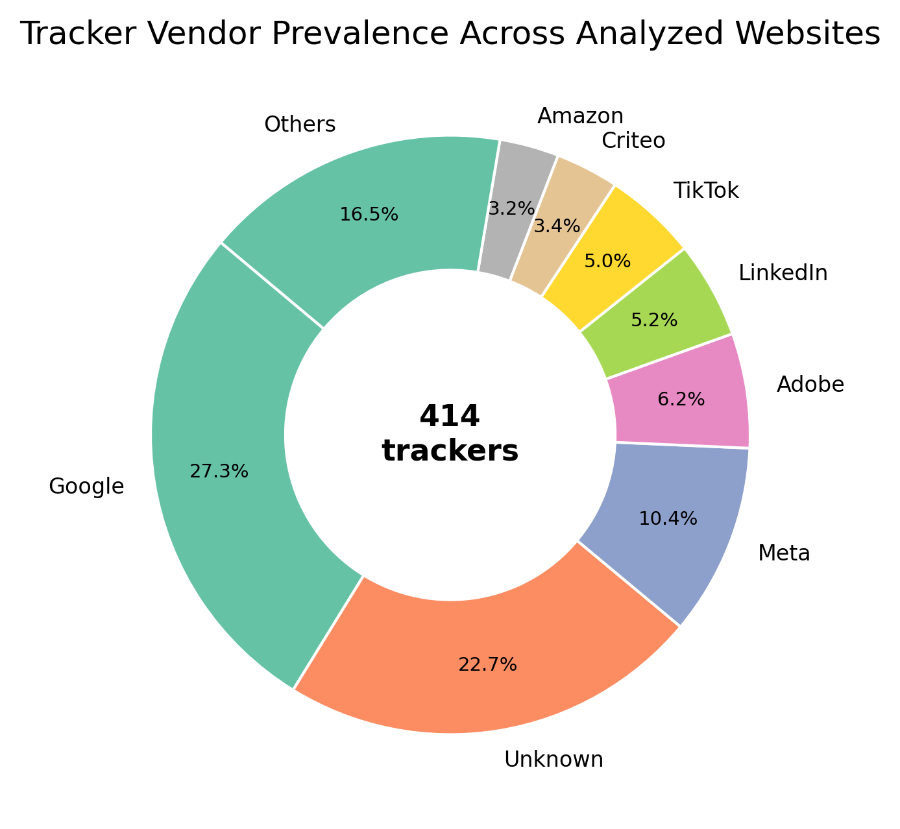
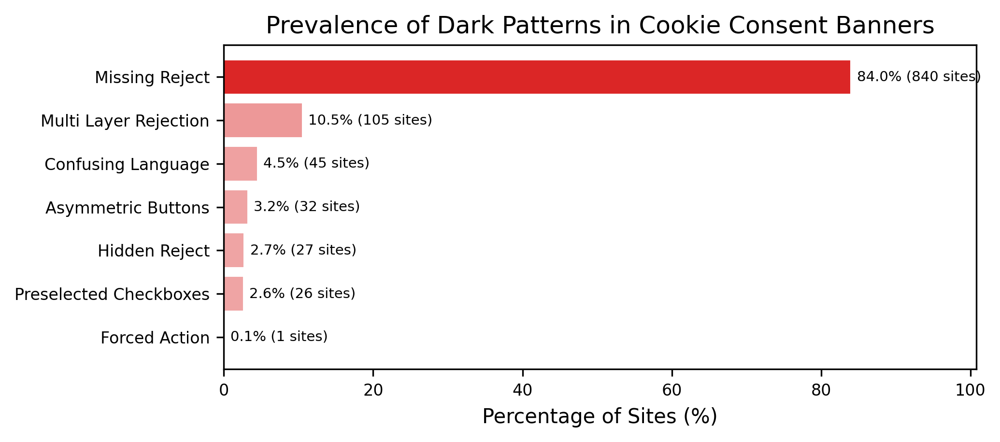
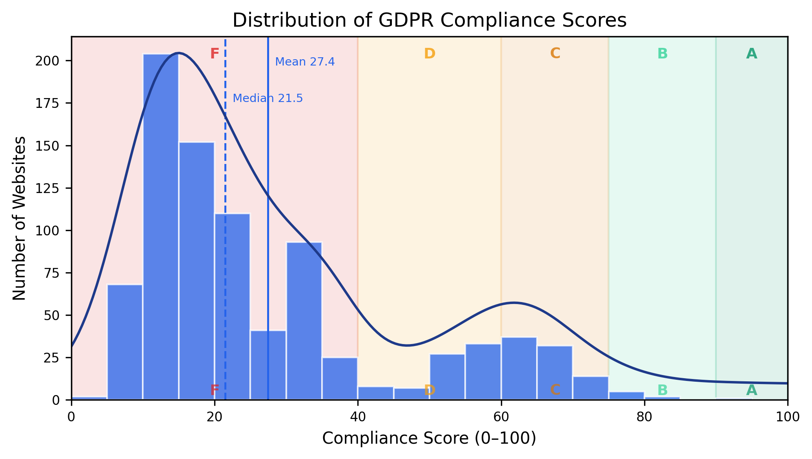
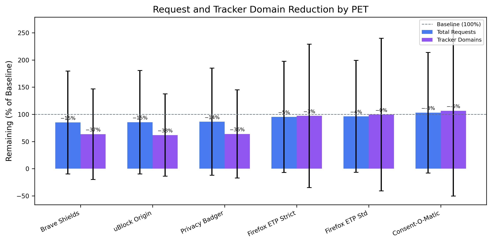
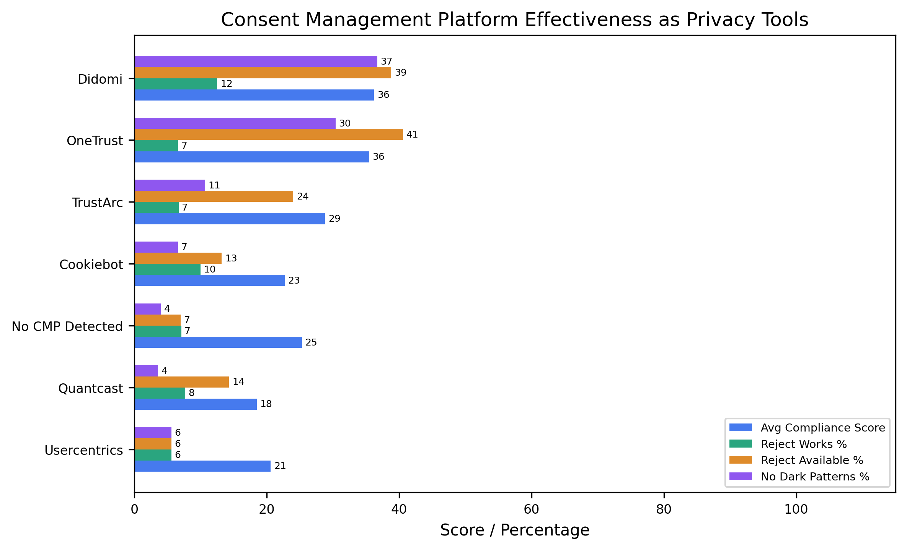

1. Introduction
Cookie consent interfaces are now a routine part of web browsing, especially for users visiting sites subject to the General Data Protection Regulation (GDPR). In principle, these interfaces should give people meaningful control: non-essential cookies should not be set before consent, rejection should be as accessible as acceptance, and users should receive enough information to make an informed choice. In practice, cookie banners often behave as compliance theatre. They may hide or fragment the reject path, use asymmetric visual emphasis, preselect tracking categories, or continue third-party tracking even after rejection.
AECCS addresses this gap as both a measurement system and an end-user tool. The first artifact is a large-scale pipeline that crawls websites in three consent states, classifies cookies and trackers, detects seven consent-interface dark patterns, computes a GDPR-oriented score, and compares browser-level PETs and CMPs. The second artifact is a Chrome/Firefox-compatible browser extension that runs a local audit on the current page, reports live cookie and consent evidence, and contextualizes the finding using the 1,000-site study snapshot.
The novelty is not that AECCS is the first system to detect consent dark patterns or pre-consent tracking. Prior studies established both problems. To our knowledge, AECCS is distinctive in jointly combining dark pattern prevalence, technical pre-consent and post-reject tracking behavior, browser-level PET effectiveness, CMP-level outcomes, differential privacy for aggregate publication, and a deployable local audit extension. This makes the project useful for both empirical privacy measurement and practical user-facing inspection.
Problem Statement and Research Questions
The central problem is that a consent banner can appear compliant while failing users at two levels: the interface can make rejection difficult, and the underlying page can still collect tracking data before or after the user rejects. AECCS therefore evaluates both the visible consent interface and the technical evidence of cookies and trackers. The report is organized around five research questions:
- RQ1: How often do popular sites set tracker cookies before consent?
- RQ2: Do consent banners provide visible and usable reject paths?
- RQ3: Do reject choices technically reduce tracking after interaction?
- RQ4: Which browser PETs mitigate tracking when consent systems fail?
- RQ5: Can this measurement methodology be operationalized as a local user-facing Browser Extension?
Contributions
- A reproducible pipeline for measuring cookie-consent behavior across 1,000 websites and 12 categories.
- A GDPR-oriented scoring model combining pre-consent tracking, reject availability, UI symmetry, dark patterns, post-reject behavior, and transparency signals.
- A PET evaluation that directly connects dark patterns with browser-side mitigation, testing uBlock Origin, Privacy Badger, Firefox ETP Standard/Strict, Brave Shields, and Consent-O-Matic over the same 1,000-site corpus.
- A focused treatment of Brave Shields, Firefox ETP, and Consent-O-Matic as deployed PETs that are often used by real users but rarely benchmarked in GDPR-consent studies.
- A corpus that includes government and public-sector sites, where legal and public-interest expectations make consent failures especially important.
- A 2026 frozen snapshot that captures consent behavior after the Digital Markets Act enforcement period began, while preserving a stable evidence base for reporting.
- A CMP comparison that treats consent platforms as privacy mechanisms rather than only interface vendors.
- A local Browser Extension that turns the research pipeline into an inspectable page-level audit tool rather than leaving the work as an offline study only.
3. System and Method
The study corpus is stored in data/websites_combined.csv and contains 1,000 sites across 12 categories: news, e-commerce, social media, government, entertainment, education, technology, travel, finance, marketplace, employment, and health. The completed combined run is stored under data/real_combined with run id combined-1000. The report treats these frozen CSV/JSON outputs as authoritative. The proposed solution is an integrated pipeline that measures consent behavior first, then exposes the same evidence model through a local Browser Extension.
| Category | Corpus sites | Successful scored crawls |
|---|---|---|
| E-commerce | 112 | 98 |
| Education | 99 | 87 |
| Employment | 92 | 79 |
| Entertainment | 97 | 79 |
| Finance | 96 | 77 |
| Government | 95 | 77 |
| Health | 90 | 79 |
| Marketplace | 55 | 53 |
| News | 110 | 99 |
| Social media | 35 | 33 |
| Technology | 21 | 18 |
| Travel | 98 | 82 |
3.1 Consent-State Crawler
The crawler uses Playwright to visit each site and capture evidence in three states: no interaction, after clicking an accept-all path when detected, and after clicking a reject-all or equivalent path when detected. For each state, AECCS records cookies, third-party domains, HTTP request evidence, banner HTML, detected CMP, visible button candidates, and provenance metadata. This design separates the presence of a banner from the technical behavior of cookies and trackers.
| Consent state | Action | Evidence captured |
|---|---|---|
| No interaction | Load page without clicking the banner. | Baseline cookies, requests, third-party domains, banner/CMP evidence. |
| Accept all | Click an accept-all candidate when one is detected. | Post-accept cookies, trackers, and request changes. |
| Reject all | Click a reject-all or equivalent candidate when one is detected. | Post-reject cookies, tracker reduction, and reject-path effort. |
3.2 Tracker Classification
The classifier labels cookies and domains using EasyList, EasyPrivacy, Disconnect-derived mappings, fallback tracker domains, and heuristic cookie-name patterns. Cookies are categorized as first-party or third-party and as tracker or non-tracker, with vendor labels such as Google, Meta, Adobe, LinkedIn, TikTok, and Criteo where possible.
3.3 Dark-Pattern Detection and Scoring
AECCS detects seven consent-interface dark patterns: missing reject, multi-layer rejection, asymmetric buttons, hidden reject, confusing language, forced action, and preselected checkboxes. The frozen scoring model assigns a 0-100 compliance score from six criteria: no pre-consent trackers, reject availability, equal accept/reject effort, absence of dark patterns, post-reject compliance, and transparent information. Scores are converted to A-F grades for comparison.
| Criterion | Frozen weight | Operational meaning |
|---|---|---|
| No pre-consent trackers | 25% | Non-essential trackers should not appear before consent. |
| Reject option available | 20% | A user-visible reject path should be present. |
| Equal accept/reject effort | 15% | Rejecting should not require more effort than accepting. |
| No dark patterns | 15% | The banner should avoid manipulative UI patterns. |
| Post-reject compliance | 15% | Rejecting should reduce or eliminate non-essential tracking. |
| Transparent information | 10% | The interface should provide clear privacy/cookie information. |
3.4 PET, CMP, and DP Analysis
PET evaluation compares seven configurations: baseline, uBlock Origin, Privacy Badger, Firefox ETP Standard, Firefox ETP Strict, Brave Shields, and Consent-O-Matic. AECCS also ranks CMPs as privacy tools using compliance score, reject availability, reject effectiveness, dark-pattern prevalence, and tracker reduction. For responsible aggregate publication, the pipeline includes differential privacy experiments with Laplace, Gaussian, and randomized-response mechanisms over several epsilon values.
| Component | Configuration | Reported outcome |
|---|---|---|
| Browser PETs | Baseline, uBlock Origin, Privacy Badger, Firefox ETP Standard, Firefox ETP Strict, Brave Shields, Consent-O-Matic. | 7,000 attempted rows; 6,210 successful PET rows. |
| CMP analysis | OneTrust, TrustArc, Cookiebot, Didomi, Quantcast, Usercentrics, and no detected CMP. | CMP ranking by compliance, reject visibility, reject effectiveness, dark patterns, and tracker reduction. |
| DP reporting | Laplace, Gaussian, and randomized response over multiple epsilon values. | Privacy/utility costs for publishing aggregate statistics. |

4. Browser Extension
The Browser Extension is a co-equal project contribution because it turns AECCS from an offline measurement pipeline into a user-facing audit tool rather than a static demonstration. The extension is a Manifest V3 Chrome/Firefox extension named AECCS Cookie Compliance Checker. It is deliberately conservative: it performs a local, user-initiated audit of the current tab, does not auto-click banner controls, does not block traffic, does not crawl in the background, and does not transmit per-site audit data.
Architecturally, the popup is the user interface, the background service worker orchestrates tab-level analysis, the content scanner inspects the live DOM and banner candidates, and the library layer performs domain normalization, cookie classification, scoring, and study-backed recommendation generation. This mirrors the research pipeline while respecting the constraints of a lightweight browser extension.
| Extension module | Role in the local audit |
|---|---|
| Popup UI | Renders score, cookie evidence, dark patterns, PET guidance, and post-click comparison. |
| Background service worker | Coordinates active-tab analysis, frame selection, cookie reads, and session state. |
| Content scanner | Detects CMPs, banners, buttons, transparency signals, and dark-pattern evidence in the page DOM. |
| Local classifier and scorer | Classifies cookies/trackers and computes baseline or post-interaction compliance scores. |
| Generated study assets | Embed shared constants, tracker index data, and the frozen 1,000-site study snapshot. |

The extension is also available through public browser stores: Firefox Add-ons and Chrome Web Store. These listings make the research artifact usable outside the offline evaluation pipeline while preserving the extension's local-only audit model.
The extension reuses research assets generated from the Python pipeline. The file extension/lib/shared-config.js exports the shared consent vocabulary, CMP signatures, fallback trackers, cookie heuristics, scoring weights, and grade thresholds. The file extension/lib/study-snapshot.js freezes the 1,000-site study metadata, PET rankings, and CMP results. The file extension/lib/tracker-index.js provides a compact tracker index for lightweight runtime classification.
At runtime, the background service worker injects a consent scanner into the active page, coordinates same-tab frame analysis, reads current cookies through browser permissions, classifies tracker evidence, and computes a page-level score. If a banner is visible, the extension can arm a session-limited watcher so that user-initiated accept, reject, or essential-only actions can be compared with the baseline cookie state. This yields a local post-interaction honesty check: the extension can show whether a visible reject path actually reduced tracker exposure in the observed session.
Because the extension observes the user's live browser rather than replaying the controlled crawler, its findings may differ from the frozen 1,000-site results. Browser cookie settings, installed PETs, prior consent choices, location, profile state, and current site changes can all reduce or change the evidence visible at runtime. These differences are expected and useful: the extension reports current-session evidence, while the study reports a controlled point-in-time corpus measurement.
| Extension capability | Purpose | Privacy posture |
|---|---|---|
| Live cookie and tracker audit | Classifies current cookies, third-party evidence, and tracker-heavy pages. | Runs locally on the active tab. |
| Consent dark-pattern scan | Detects missing reject, multi-layer rejection, hidden reject, asymmetry, preselection, confusing language, and forced action. | No page content leaves the browser. |
| Post-interaction comparison | Compares before/after state when the user manually accepts or rejects. | Session-limited; no auto-clicking. |
| Study-backed PET guidance | Explains which PETs performed best in the 1,000-site study. | Uses frozen local study assets. |
| Research pipeline capability | Extension runtime equivalent |
|---|---|
| Batch cookie and tracker classification | Live classification of current-tab cookies using generated tracker data. |
| CMP and banner detection | DOM-based detection of visible banners, CMP signatures, and consent controls. |
| Dark-pattern detector | Runtime warnings for missing reject, multi-layer rejection, hidden reject, asymmetry, preselection, confusing language, and forced action. |
| Compliance scoring | Page-level baseline score and post-interaction state score for the active tab. |
| PET/CMP comparison | Study-backed recommendations that explain which tools performed best in the frozen corpus. |
5. Evaluation Results
The frozen combined dataset contains 1,000 attempted crawls, 861 successful crawls, and 139 failures. Among successful crawls, 595 sites showed a detected consent banner and 266 did not. The findings show that banners are common but rarely sufficient: pre-consent tracking, missing reject paths, and weak post-reject behavior remain widespread.
| Metric | Frozen result | Denominator |
|---|---|---|
| Total sites | 1,000 | Combined corpus |
| Successful crawls | 861 | 1,000 attempted sites |
| Pre-consent tracker violations | 753 (87.5%) | 861 successful crawls |
| Sites with banners | 595 | 861 successful crawls |
| Visible reject option | 160 (26.9%) | 595 banner sites |
| Any dark pattern, scored sites | 758 (88.0%) | 861 scored sites |
| Any dark pattern, aggregate detector | 897 (89.7%) | 1,000 processed dark-pattern outputs |
| Mean compliance score | 27.4/100 | 861 scored sites |
5.1 Pre-Consent Tracking
AECCS found pre-consent trackers on 753 of 861 successful crawls, or 87.5%. The mean successful site exposed 6.6 tracker cookies before any consent interaction, with a median of 5. Travel, employment, and news had the highest violation rates: 96.3%, 93.7%, and 91.9%, respectively. Government sites had the lowest category rate, but still showed pre-consent trackers on 75.3% of successful crawls.
This directly answers RQ1: for most sites in the corpus, consent does not protect users before data collection begins. The page has already loaded tracker cookies before the user can accept, reject, or inspect the banner.

5.2 Tracker Ecosystem
The frozen aggregate metrics identify 2,971 tracker cookies across 414 tracker domains. Google was the most common labeled vendor, present on 256 successful sites, followed by unknown/unlabeled tracker vendors on 213 sites and Meta on 97 sites. By cookie category, analytics and advertising dominated the ecosystem.
| Tracker vendor/category | Presence or count | Share |
|---|---|---|
| 256 sites; 734 cookies | 29.7% of successful sites | |
| Unknown vendor | 213 sites; 1,126 cookies | 24.7% of successful sites |
| Meta | 97 sites; 99 cookies | 11.3% of successful sites |
| Adobe | 58 sites; 124 cookies | 6.7% of successful sites |
| 49 sites; 208 cookies | 5.7% of successful sites | |
| Analytics category | 1,331 cookies | 44.8% of tracker cookies |
| Advertising category | 996 cookies | 33.5% of tracker cookies |
| Social category | 474 cookies | 16.0% of tracker cookies |

5.3 Reject Availability and Effectiveness
Among 595 successful sites with detected banners, only 160 (26.9%) exposed a visible reject option. In other words, 435 banner sites (73.1%) lacked a visible reject path in the detected interface. Even when rejection could be attempted, it rarely reduced exposure: the aggregate metrics report that reject reduced trackers on only 7.6% of applicable sites. Average tracker counts were 6.6 before interaction, 9.5 after accept, and 6.9 after reject.
This answers RQ2 and RQ3 together. The missing reject path is a UI-level failure, while the weak reduction after rejection is a technical enforcement failure: the interface can offer a choice that the underlying page does not meaningfully honor.
5.4 Dark Patterns
Dark-pattern prevalence depends on denominator. Within the 861 scored sites, 758 (88.0%) had at least one dark pattern. The aggregate detector output reports 897/1,000 processed sites (89.7%) with at least one detected pattern. This report presents both figures because the scored-site denominator is best for compliance-score interpretation, while the aggregate detector denominator is best for full-corpus prevalence. Missing reject was the dominant pattern at 840 detections, followed by multi-layer rejection at 105.
The dominant pattern, missing reject, matters because it changes the practical meaning of consent. A banner that makes acceptance obvious while hiding or omitting rejection does not give users an equally usable choice.

5.5 Compliance Scores
The mean frozen compliance score was 27.4/100, with a median of 21.5 and a maximum of 92.0. Grade distribution was heavily skewed: 695 of 861 scored sites (80.7%) received F, while only 1 site received A and 7 received B. The strongest category by average score was technology (36.6), while marketplace (21.7), employment (22.8), and travel (23.6) were among the weakest.
The grade distribution compresses the previous findings into a single compliance picture: a site can lose points because it tracks before consent, hides rejection, uses manipulative design, or fails to honor rejection technically. The large F-grade cluster shows that these failures often appear together.
| Grade | Count | Share of scored sites |
|---|---|---|
| A | 1 | 0.1% |
| B | 7 | 0.8% |
| C | 83 | 9.6% |
| D | 75 | 8.7% |
| F | 695 | 80.7% |

5.6 Browser PET Effectiveness
PET evaluation attempted 7,000 measurements: 1,000 sites times seven browser configurations. Of these, 6,210 rows succeeded. The top browser-level tools by tracker-domain reduction were Brave Shields at 22.8%, uBlock Origin at 22.4%, and Privacy Badger at 21.0%. Consent-O-Matic did not behave like a network blocker; its value is consent-flow automation, and in this dataset it did not reduce tracker-domain exposure relative to baseline.
This answers RQ4. Browser-side defenses help when consent systems fail, but the result is mitigation rather than compliance: users should not need a blocker to obtain the baseline protection that lawful consent should already provide.
| Rank | PET | Successful sites | Tracker-domain reduction | Request reduction |
|---|---|---|---|---|
| 1 | Brave Shields | 878 | 22.8% | 10.9% |
| 2 | uBlock Origin | 878 | 22.4% | 5.2% |
| 3 | Privacy Badger | 881 | 21.0% | 8.4% |
| 4 | Firefox ETP Strict | 890 | -0.5% | -7.2% |
| 5 | Consent-O-Matic | 896 | -11.2% | -11.9% |
| 6 | Firefox ETP Standard | 890 | -2.2% | -16.4% |

5.7 CMP Comparison
AECCS ranked CMPs as privacy tools rather than only as banner providers. Didomi ranked highest with a PET score of 24.9, followed by OneTrust at 24.1 and TrustArc at 16.3. These scores are still low in absolute terms. Didomi had the best aggregate ranking, but only 38.8% of Didomi sites had a detected reject button and only 12.5% showed tracker reduction after reject.
The CMP ranking should therefore be read comparatively, not as certification. The best-ranked CMPs in this dataset are better than the alternatives, but still leave many sites with missing reject paths, dark patterns, or weak post-reject enforcement.
| Rank | CMP | Sites | Avg. score | Reject visible | Reject works | PET score |
|---|---|---|---|---|---|---|
| 1 | Didomi | 49 | 36.2 | 38.8% | 12.5% | 24.9 |
| 2 | OneTrust | 138 | 35.5 | 40.6% | 6.6% | 24.1 |
| 3 | TrustArc | 121 | 28.8 | 24.0% | 6.7% | 16.3 |
| 4 | Cookiebot | 91 | 22.7 | 13.2% | 10.0% | 12.1 |
| 5 | No CMP Detected | 555 | 25.3 | 7.0% | 7.1% | 11.1 |

6. Discussion and Limitations
The results reinforce prior work: the presence of a cookie banner is not evidence of meaningful consent. Banners frequently omit visible rejection, trackers frequently fire before interaction, and rejection often fails to reduce tracker exposure. Browser PETs provide a second line of defense, but they compensate only partially and unevenly.
The Browser Extension addresses RQ5 by operationalizing the study as a live inspection tool. It does not claim to reproduce the full three-state crawler on every page; instead, it gives users a practical way to see current cookies, visible consent controls, dark-pattern evidence, and study-backed PET guidance in the same browser where the consent decision happens.
6.1 Threats to Validity
Web measurement is inherently noisy. Sites may vary banners by IP geolocation, browser, prior cookie state, timing, language, A/B tests, CMP configuration, and bot-detection behavior. The combined run includes 139 failed crawls, and failure rates are part of the empirical reality of measuring modern websites. AECCS records provenance and preserves run outputs so that claims remain tied to a frozen snapshot.
Classifier and detector limitations also matter. Filter-list matching can miss emerging tracker domains or overgeneralize some third-party services. Rule-based dark-pattern detection cannot perfectly infer legal intent, visual salience, or every multilingual banner variant. Headless and automated browsing can trigger different behavior than a residential user's browser, and a single frozen run cannot capture long-term changes in CMP configuration, tracker lists, or site availability.
Manual verification can therefore disagree with the study without making either observation meaningless. A manual spot check occurs in a particular browser, network, region, consent history, date, and privacy configuration, while AECCS reports a frozen March 2026 measurement under a controlled crawler protocol. To directly challenge a site-level finding, a reproduction should match the URL, date window, fresh-profile state, location assumptions, browser configuration, consent interaction state, and tracker-classification definition used by the frozen dataset. Otherwise, the mismatch is best treated as evidence of environmental or temporal variation, which is itself an important property of consent measurement.
The report uses frozen March 2026 scores, rather than recomputing with later April scoring-code revisions. This choice keeps the report, generated figures, extension study snapshot, and CSV/JSON outputs internally consistent. A later sensitivity analysis could compare the frozen scores with the revised scoring model.
7. Implementation and Reproducibility
The repository is organized around a reproducible pipeline. The README documents installation, Playwright browser setup, source modes, and the unified runner. The key implementation modules are: scraper/crawler.py for data collection, analysis/classifier.py for tracker classification, dark_patterns/detector.py for consent-interface analysis, analysis/scoring.py for compliance scoring, pets_evaluation/browser_pets.py for PET evaluation, and reporting/report_generator.py for generated reports.
The README-supported workflow uses python -m scripts.run_pipeline --source-mode mock for validation runs and python -m scripts.run_pipeline --source-mode real --run-id ... for real crawls. Individual modules can also be run independently for classification, dark-pattern detection, scoring, metrics, PET evaluation, DP reporting, CMP analysis, visualization, and HTML report generation.
| Repository artifact | Role in reproducibility |
|---|---|
| data/real_combined/processed | Frozen source of truth for report numbers, scores, PET summaries, and CMP outputs. |
| reporting/real_combined/figures | Generated report-ready figures referenced by this HTML report. |
| extension | Manifest V3 Browser Extension using generated research assets. |
| docs/extension_*.md | Store listing, release checklist, reviewer notes, and privacy-policy materials. |
| tests | Pipeline, provenance, generated-config, release, and extension-scanner validation coverage. |
The completed study outputs are under data/real_combined/processed, while report figures are under reporting/real_combined/figures. The extension is under extension and is packaged through scripts/package_extension_release.py. Scripts also generate extension-facing assets from the research outputs, ensuring that the browser tool and the study use the same constants and frozen empirical baseline.
The repository includes tests for pipeline execution, validation/provenance, generated extension config, extension release packaging, and browser-extension scanner behavior. This matters because AECCS is not only a report artifact; it is a software system with data, analysis, release, and end-user components.
8. Future Work
Future work should repeat crawls across multiple times, networks, IP geolocations, and browsers to quantify measurement variance rather than treating it only as a limitation. The dark-pattern detector could be improved with visual and machine-learning features, especially for multilingual banners and shadow-DOM/iframe-heavy CMPs. PET evaluation could be expanded with additional browsers, mobile contexts, and real extension runtime behavior where practical.
The Browser Extension also opens a separate evaluation path. A user study could measure whether live consent evidence changes user understanding or behavior. The extension could add exportable local audit summaries, stronger accessibility checks, and clearer explanations of uncertainty while preserving its no-remote-data privacy posture.
9. Conclusion
AECCS shows that cookie-consent compliance remains weak across a large and diverse website corpus. In the frozen 1,000-site study, most successful sites set trackers before consent, most banner sites lacked a visible reject option, dark patterns were widespread, and average compliance was low. Browser PETs helped reduce tracker exposure, but did not solve the consent problem on their own. The project's central contribution is therefore twofold: AECCS provides empirical evidence about consent failures at scale, and it packages that evidence into a local browser extension that lets users inspect live consent behavior directly.
References
[1] M. Nouwens, I. Liccardi, M. Veale, D. Karger, and L. Kagal. 2020. Dark Patterns after the GDPR: Scraping Consent Pop-ups and Demonstrating their Influence. CHI 2020. https://dl.acm.org/doi/10.1145/3313831.3376321
[2] A. Bouhoula, K. Kubicek, A. Zac, C. Cotrini, and D. Basin. 2024. Automated Large-Scale Analysis of Cookie Notice Compliance. USENIX Security 2024. https://www.usenix.org/conference/usenixsecurity24/presentation/bouhoula
[3] R. Khandelwal, A. Nayak, H. Harkous, and K. Fawaz. 2023. Automated Cookie Notice Analysis and Enforcement. USENIX Security 2023. https://www.usenix.org/conference/usenixsecurity23/presentation/khandelwal
[4] I. Sanchez-Rola, M. Dell'Amico, P. Kotzias, D. Balzarotti, L. Bilge, P. Vervier, and I. Santos. 2019. Can I Opt Out Yet?: GDPR and the Global Illusion of Cookie Control. AsiaCCS 2019.
[5] N. Bielova, L. Litvine, A. Nguyen, M. Chammat, V. Toubiana, and E. Hary. 2024. The Effect of Design Patterns on (Present and Future) Cookie Consent Decisions. USENIX Security 2024. https://www.usenix.org/conference/usenixsecurity24/presentation/bielova
[6] M. Smith, A. Torres-Agüero, R. Grossman, P. Sen, Y. Chen, and C. Borcea. 2024. A Study of GDPR Compliance under the Transparency and Consent Framework. WWW 2024. https://dl.acm.org/doi/10.1145/3589334.3645618
[7] C. Matte, N. Bielova, and C. Santos. 2020. Do Cookie Banners Respect My Choice? Measuring Legal Compliance of Banners from IAB Europe's Transparency and Consent Framework. IEEE Symposium on Security and Privacy 2020. https://doi.org/10.1109/SP40000.2020.00076
[8] D. Bollinger, K. Kubicek, C. Cotrini, and D. Basin. 2022. Automating Cookie Consent and GDPR Violation Detection. USENIX Security 2022. https://www.usenix.org/conference/usenixsecurity22/presentation/bollinger
[9] European Union. 2016. Regulation (EU) 2016/679, General Data Protection Regulation. https://eur-lex.europa.eu/eli/reg/2016/679/oj
[10] N. Demir, M. Große-Kampmann, T. Urban, C. Wressnegger, T. Holz, and N. Pohlmann. 2022. Reproducibility and Replicability of Web Measurement Studies. WWW 2022. https://dl.acm.org/doi/10.1145/3485447.3512214
[11] R. van Eijk, H. Asghari, P. Winter, and A. Narayanan. 2021. The Impact of User Location on Cookie Notices (Inside and Outside of the European Union). arXiv:2110.09832. https://arxiv.org/abs/2110.09832
[12] noyb. 2021. noyb aims to end cookie banner terror and issues more than 500 GDPR complaints. https://noyb.eu/en/noyb-aims-end-cookie-banner-terror-and-issues-more-500-gdpr-complaints
[13] noyb. 2025. noyb win: Conde Nast fined EUR 750,000 for placing cookies without consent. https://noyb.eu/en/noyb-win-conde-nast-fined-eu750000-placing-cookies-without-consent
[14] CMS. GDPR Enforcement Tracker Report: Numbers and Figures. https://cms.law/en/int/publication/gdpr-enforcement-tracker-report/numbers-and-figures
[15] CNIL. Cookies and other tracking devices guidance. https://www.cnil.fr/en/cookies-and-other-tracking-devices